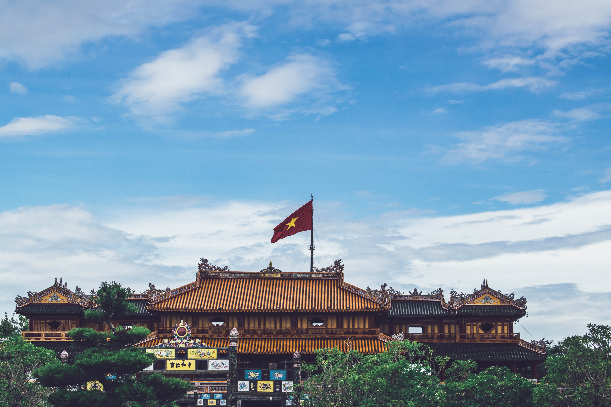
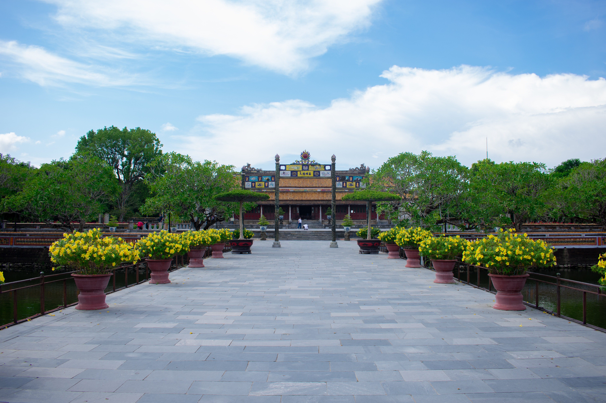
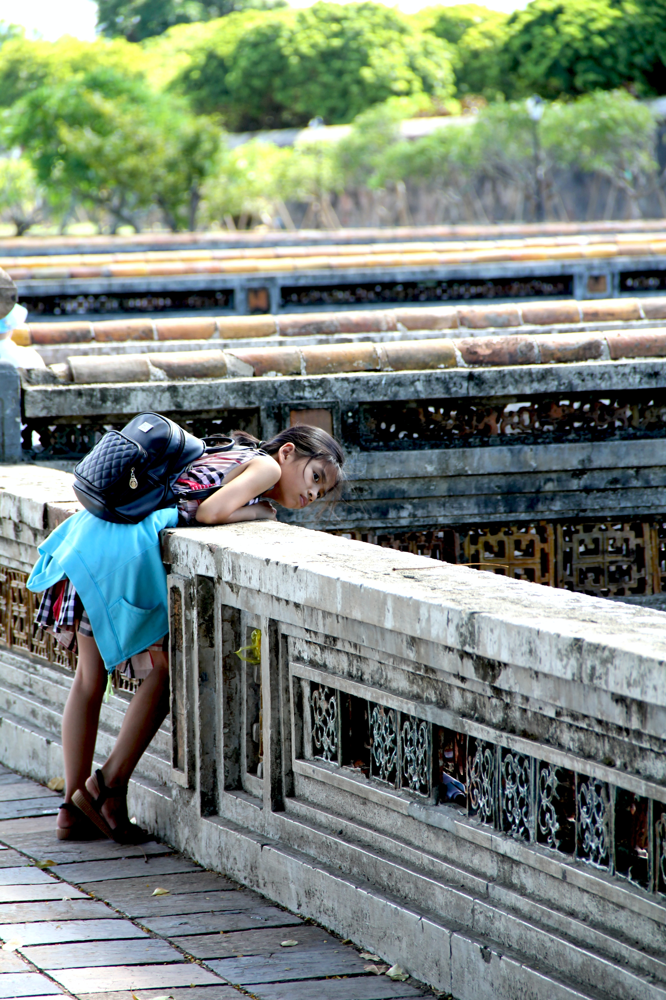

WELCOME TO FORBIDDEN CITY
The Purple Forbidden City (Vietnamese: Tử Cấm thành; Chinese character: 紫禁城) is a walled enclosure within the citadel (Kinh thành; 京城) of the city of Huế, the former imperial capital of Vietnam.
DISCOVER

MERIDIAN GATE

HALL OF SUPREME HARMONY

INNER PAPLACES
LAYOUT
OUTER COURT
- Thái Hòa Điện (太和殿)
- Phụng Tiên Điện (奉先殿)
- Trường Sanh Cung (長生宮)
- Diên Thọ Cung (延壽宮)
INNER COURT
- Đại Cung môn (大宮門)
- Tả Vu (左廡), Hữu Vu (右廡)
- Cần Chánh Điện (勤政殿)
- Võ Hiển Điện (武顯殿)
- Văn Minh Điện (文明殿)
- Trinh Minh Điện (貞明殿)
- Quang Minh Điện (光明殿)
- Càn Thành Điện (乾成殿)
- Khôn Thái Điện (坤泰殿)
- Thuận Huy Viện (順徽院)
- Dưỡng Tâm Viện (養心院)
- Ngự Tiền Văn Phòng (御前文房)
- Lục Viện (六院)
- Điện Minh Thận (明慎殿)
CONTACT HERE
Email: realhuyquocnguyen@gmail.com